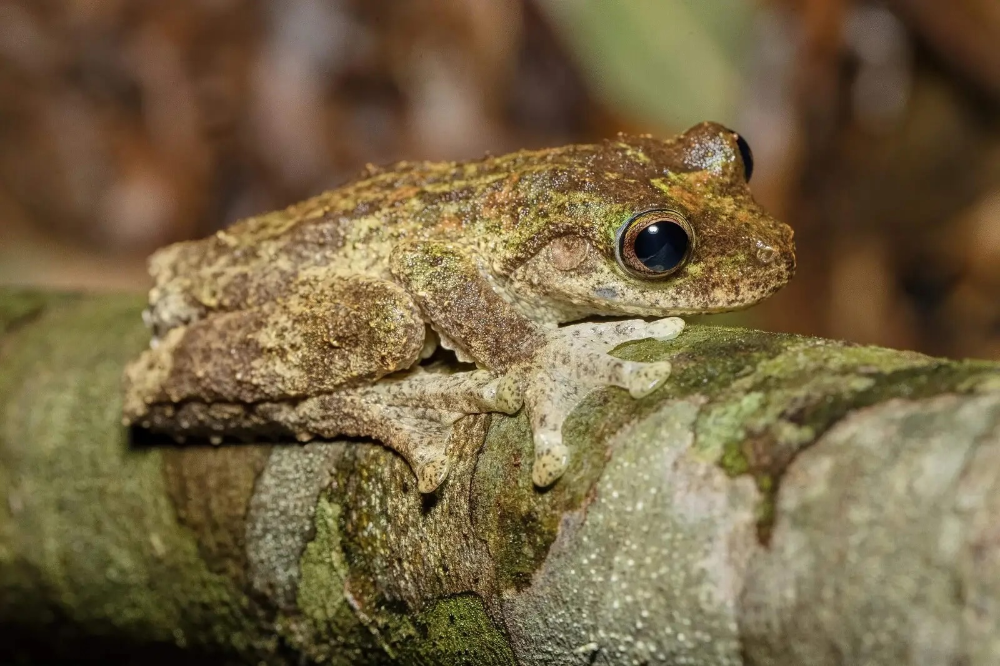
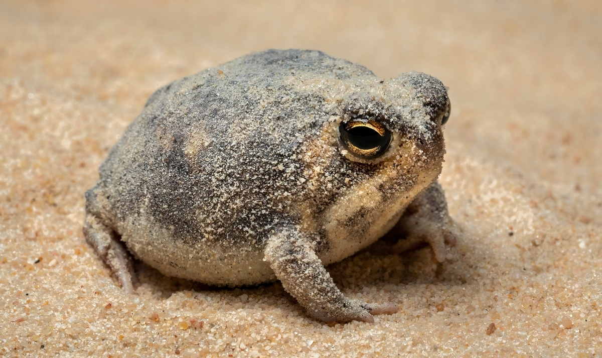

Frogs possess an unmistakable visual charm that makes them instant favorites both in the wild and across the internet. Their most captivating trait is their oversized, glossy eyes, which sit high on their heads and trigger the human brain's natural response to "baby schema"—the same biological instinct that makes us find infants or puppies irresistible. Paired with wide jawlines that naturally curve upward into perpetual, cheerful grins, frogs always appear delightfully happy and endlessly curious about their surroundings.
Beyond their expressive facial features, frogs come in uniquely funny and appealing physical proportions. Species like the desert rain frog or the Australian green tree frog feature round, plump bodies that resemble tiny, smooth jellybeans with legs. Their soft, squishy appearance gives them a surprisingly cuddly aesthetic, while their vivid color palettes—ranging from soothing mossy greens and pastel blues to bright, candy-like patterns—make them look almost like living art toys.

A frog's quirky movements and clumsy postures add a whole new layer of comedy to their cuteness. Frogs are famous for their awkward sitting habits, whether they are perched perfectly upright with neatly folded toes, sprawled out completely flat on a smooth stone, or clinging directly to glass walls. Tree frogs in particular feature oversized, bulbous toe pads that look like miniature cartoon suction cups, giving their little hands an endearing, exaggerated look as they climb.
To top it all off, frogs express themselves through unexpected and downright comical sounds. Rather than the deep, gruff croaks most people expect, many smaller frog species produce high-pitched, squeaky-toy sounds when they feel vocal or threatened. Combining these absurd squeaks with their big eyes, rotund shapes, and dramatic jumping abilities, these little amphibians manage to pack a massive amount of personality into a very small frame

© 2026 Madsion Brown. All rihgts reserved.